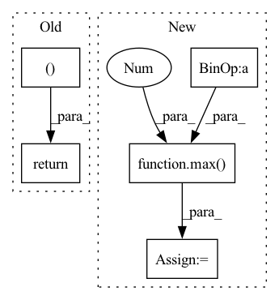

Pattern ID :10402

Before Change
model.load_state_dict(checkpoint_dict["state_dict"])
optimizer.load_state_dict(checkpoint_dict["optimizer"])
iteration = checkpoint_dict["iteration"]
return model, optimizer, iteration
def warm_start_model(checkpoint_path, model, ignore_layers=["embedding.weight"]):
After Change
model.load_state_dict(checkpoint_dict["state_dict"])
optimizer.load_state_dict(checkpoint_dict["optimizer"])
iteration = checkpoint_dict["iteration"]
epoch = checkpoint_dict.get("epoch", max(0, int(iteration / len(train_loader))))
return model, optimizer, iteration, epoch
In pattern: SUPERPATTERN
Frequency: 4
Non-data size: 5
Instances
Fragment ID: 36401131
Project Name: benaandrew/voice-cloning-app
Commit Name: 916f641e8acba0239d73d13bbed603909b1d082f
Time: 2021-05-01
Author: bandrew01@qub.ac.uk
File Name: training/checkpoint.py
M Class Name: AnonimousClass
N Class Name: AnonimousClass
M Method Name: load_checkpoint(4)
N Method Name: load_checkpoint(3)
M Parent Class:
N Parent Class:
M File Name: training/checkpoint.py
N File Name: training/checkpoint.py
M Start Line: 60
M End Line: 61
N Start Line: 33
N End Line: 64
'>
Before Change
def alpha_gamma(self, word, context):
prefix_counts = self.counts[context]
return self.alpha(word, prefix_counts), self.gamma(prefix_counts)
def alpha(self, word, prefix_counts):
return max(prefix_counts[word] - self.discount, 0.0) / prefix_counts.N()
After Change
def alpha_gamma(self, word, context):
prefix_counts = self.counts[context]
prefix_total_ngrams = prefix_counts.N()
alpha = max(prefix_counts[word] - self.discount, 0.0) / prefix_total_ngrams
gamma = self.discount * _count_non_zero_vals(prefix_counts) / prefix_total_ngrams
return alpha, gamma
'>
Fragment ID: 36401128
Project Name: nltk/nltk
Commit Name: ce74e449dc9526e19596b1c4a9c510bbb35812cc
Time: 2019-08-11
Author: ilia.kurenkov@gmail.com
File Name: nltk/lm/smoothing.py
M Class Name: KneserNey
N Class Name: KneserNey
M Method Name: alpha_gamma(3)
N Method Name: alpha_gamma(3)
M Parent Class: Smoothing
N Parent Class: Smoothing
M File Name: nltk/lm/smoothing.py
N File Name: nltk/lm/smoothing.py
M Start Line: 52
M End Line: 53
N Start Line: 50
N End Line: 54
'>
Before Change
line_height_list.append(line_height)
line_max_width_list.append(line_width_left + line_width_right)
line_center_list.append(line_width_left)
return line_text_list, line_max_width_list, line_height_list, line_center_list
def wrap_text(text, boxWidth, font, draw):
textArr = text.split(" ")
newStr = ""
After Change
line_base = 0
line_width += char_offset_x
line_str += cdpt
line_max_height = max(line_max_height, char_height + max(0,-(glyph.bitmap_top - bitmap.rows)))
line_base = max(line_base, max(0, -(glyph.bitmap_top - bitmap.rows)))
//print(cdpt, previous, get_char_kerning(cdpt, previous, font_size, 0).x)
previous = cdpt
'>
Fragment ID: 36401139
Project Name: zyddnys/manga-image-translator
Commit Name: 0bcbbef10b32ce5150d10b7db3d183b452701690
Time: 2022-03-13
Author: dol2848@naver.com
File Name: text_rendering/text_render.py
M Class Name: AnonimousClass
N Class Name: AnonimousClass
M Method Name: calc_char_horizontal(5)
N Method Name: calc_char_horizontal(5)
M Parent Class:
N Parent Class:
M File Name: text_rendering/text_render.py
N File Name: text_rendering/text_render.py
M Start Line: 350
M End Line: 393
N Start Line: 361
N End Line: 406
'>
Before Change
axs[2].axhline(y=0.5, color="k", linestyle="-", linewidth=0.5)
axs[2].axis("off")
return score, "PSI", plot_categorical
def add_condition_drift_score_not_greater_than(self, max_allowed_psi_score: float = 0.2,
max_allowed_earth_movers_score: float = 0.1,
number_of_top_features_to_consider: int = 5):
After Change
expected_percents, actual_percents, _ = \
preprocess_for_psi(dist1=train_dist, dist2=test_dist, max_num_categories=self.max_num_categories)
score = psi(expected_percents=expected_percents, actual_percents=actual_percents)
bar_stop = max(0.4, score + 0.1)
score_bar = drift_score_bar_traces(score)
traces, xaxis_layout, yaxis_layout = feature_distribution_traces(train_dist,
'>
Fragment ID: 36401138
Project Name: deepchecks/deepchecks
Commit Name: 292e9b9c82ee947e2d2f26abd035b358b3a996c2
Time: 2021-12-26
Author: 42312361+benisraeldan@users.noreply.github.com
File Name: deepchecks/checks/distribution/train_test_feature_drift.py
M Class Name: TrainTestFeatureDrift
N Class Name: TrainTestFeatureDrift
M Method Name: _calc_drift_per_column(6)
N Method Name: _calc_drift_per_column(6)
M Parent Class: TrainTestBaseCheck
N Parent Class: TrainTestBaseCheck
M File Name: deepchecks/checks/distribution/train_test_feature_drift.py
N File Name: deepchecks/checks/distribution/train_test_feature_drift.py
M Start Line: 185
M End Line: 232
N Start Line: 174
N End Line: 244